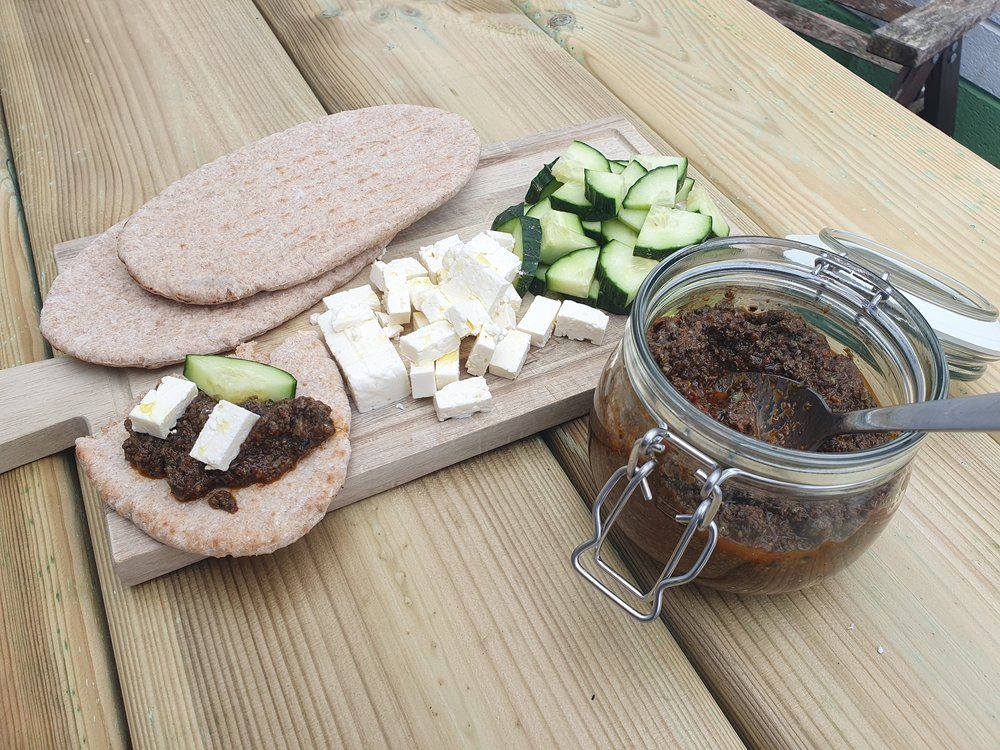

Recipe 2 Tapenade
I have never liked store-bought tapenade. The homemade stuff, in contrast is a flavour sensation! This adds sundried tomatoes for extra flavour depth

2.1 Ingredients
Makes a lunch for 2, with leftovers
- 165g black olives (drained and rinsed)
- 4 tbsp capers
- 4 large sundried tomatoes
- 2 anchovies
- a small clove of garlic
- 4-6 sprigs fresh thyme
- juice of small lemon (2 tbsp)
- 75 ml extra virgin olive oil
To serve
- Pitta
- Feta
- cucumber
2.2 Method
- Add all ingredients except the oil to a food processor, mix. A lot will stick to the sides so push down to the blade with a spoon and mix again
- With the machine running on low, slowly pour the olive oil in, mix thoroughly. Decant into a jar
- Serve with warm pittas, cubed feta and cucumber. Leftover tapenade can be stored in the fridge for several days (if it lasts that long!)